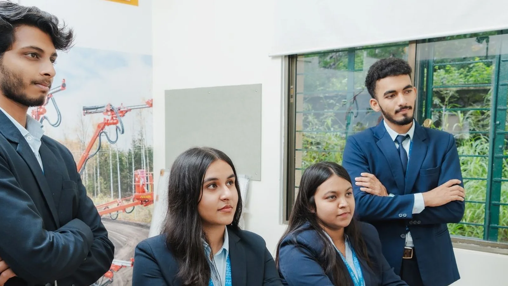
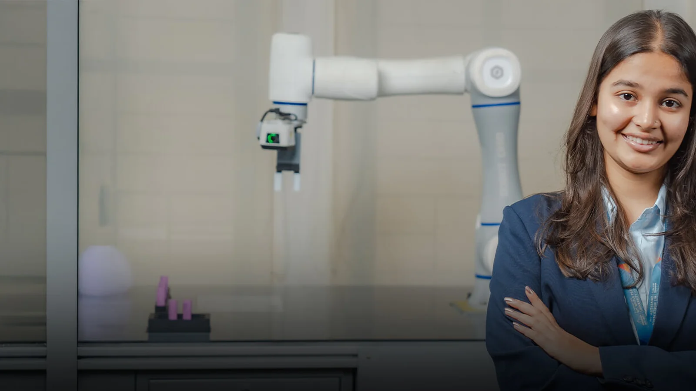

MIT-WPU School of Engineering and Technology


Overview
The School of Engineering and Technology at MIT-WPU brings together diverse disciplines such as Mechanical, Electrical and Electronics, Petroleum, Civil, Polytechnic and Skill Development, Bioengineering, Chemical, Materials Science and Engineering, and Robotics and Automation. With a strong emphasis on interdisciplinary learning, the School fosters collaboration across domains, enabling students to address complex real-world challenges through integrated approaches.
The curriculum is complemented by long-term internships, industry-oriented laboratories, and Centres of Excellence, ensuring strong alignment with industry needs and emerging technologies. A robust focus on research, innovation, and experiential learning creates an environment where ideas are transformed into impactful solutions.
At a glance
- 8
- Departments and institutes
- 37
- Programmes
- 159
- People
- 1
- Research areas
Departments and institutes
Department of Bioengineering
The Department of Bioengineering at MIT-WPU, Pune offers an interdisciplinary programme that seamlessly integrates biology, engineering, and technology to address some of the most pressing global challenges.…
Department of Chemical Engineering
The Department of Chemical Engineering at MIT-WPU offers a comprehensive blend of academics, experiential research, industrial training, and practical projects to prepare students for diverse careers.…
Department of Civil Engineering
The Department of Civil Engineering fosters a deep understanding of the engineering field, emphasising creativity and razor-sharp analytical skills. The department inspires and instil in students the values of…
Department of Electrical and Electronics Engineering
The Department of Electrical and Electronics Engineering (EEE) at MIT-WPU stands at the forefront of technological innovation, playing a pivotal role in shaping the future of engineering. It is committed to…
Department of Materials Science & Engineering
At the Department of Materials Science Engineering, MIT-WPU, students delve into the intricacies of designing and improving products, systems, and processes using an array of materials such as metals,…
Department of Mechanical Engineering
The Department of Mechanical Engineering at MIT-WPU covers a wide range of disciplines, including design, thermodynamics, materials science, manufacturing processes, automation, and robotics. Students explore…
Department of Petroleum Engineering
The Department of Petroleum Engineering, the second oldest in India & the only one in Maharashtra, offers a distinctive B.Tech Petroleum Engineering with a specialised, industry-focused curriculum. This…
Department of Polytechnic
& Skill development The MIT-WPU Department of Polytechnic is committed to providing value-based education, fostering entrepreneurial skills, and nurturing the aptitude needed for students to excel in…